地政学
ヤウンデは大統領府、官庁、議会、外交団、軍、放送機関が集まる国家運営の中心です。港湾経済のドゥアラと役割を分け、英語圏危機、地域統合、隣国情勢、選挙管理を首都の制度として受け止める街でもあります。
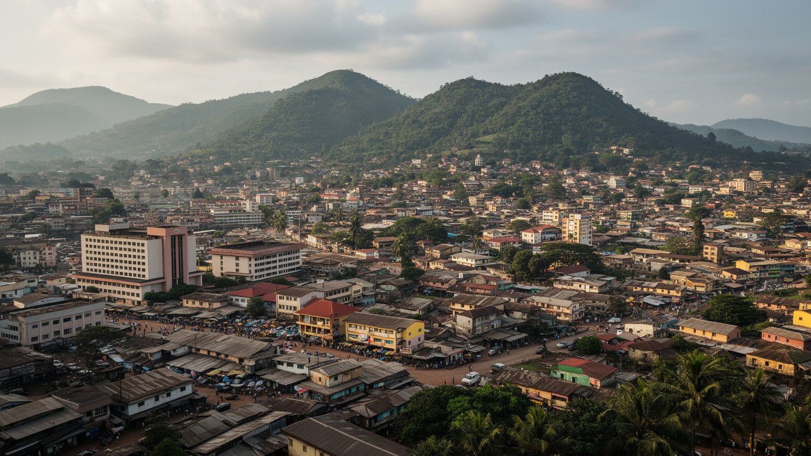
🇨🇲 カメルーン / 中央州 / World City Atlas
七つの丘に広がるカメルーンの政治首都です。国家行政、外交、大学、通信、食品加工、市場労働、宗教、丘陵住宅、交通渋滞、郊外の森林と自然保護が近い距離で重なります。
都市の骨格
ヤウンデは経済港ドゥアラとは違い、国家行政、外交、大学、放送、治安、宗教、住宅地が丘陵の尾根と谷に沿って広がる首都です。地形は景観だけでなく、渋滞、排水、移動、土地価格を決める都市の骨格です。
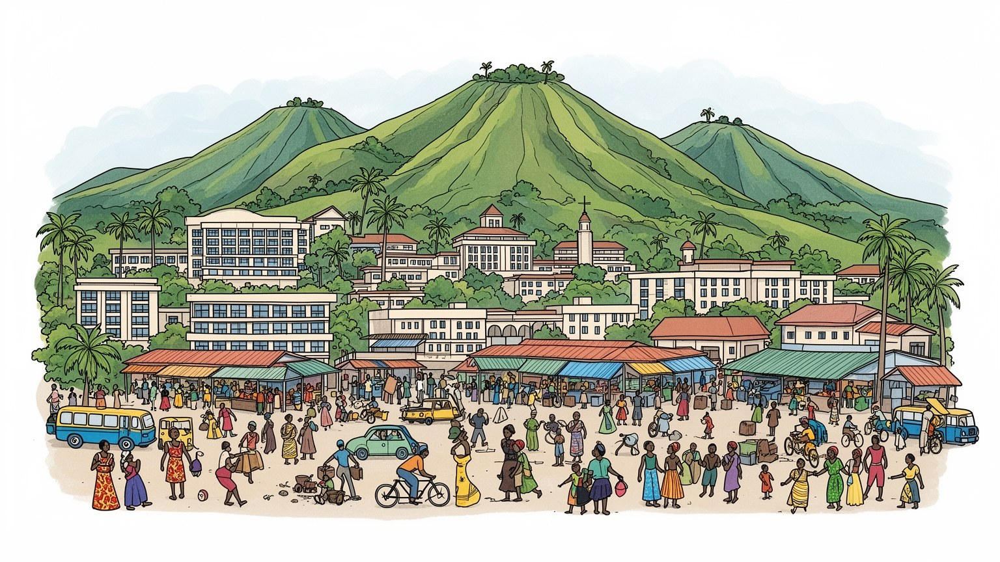
ヤウンデは大統領府、官庁、議会、外交団、軍、放送機関が集まる国家運営の中心です。港湾経済のドゥアラと役割を分け、英語圏危機、地域統合、隣国情勢、選挙管理を首都の制度として受け止める街でもあります。
行政、教育、通信、商業、食品加工、建設、交通、ホテル、警備、小売が雇用を支えます。公務と外交の街である一方、市場の露店、バイクタクシー、家事労働、修理、学生向け商売が毎日の都市経済を動かしています。
フランス語、英語、エウォンド語を含む多言語の声が交差し、教会、モスク、伝統儀礼、音楽、大学文化が生活の暦を作ります。宗教施設は祈りだけでなく、教育、相談、地域支援、都市移住者の居場所にもなります。
旅行者は統一記念碑、国立博物館、市場、丘からの眺望へ向かいますが、住民は渋滞、排水、家賃、水、雇用、通学と向き合います。観光の魅力は、首都の日常と丘陵都市の生活課題を同時に見ることで深まりますね。
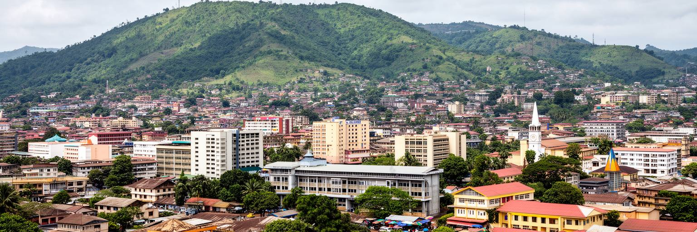
ヤウンデは「七つの丘の街」と呼ばれ、首都の景観は平坦な格子ではなく、尾根、谷、坂道、緑地、湿地が絡む立体的な地形でできています。官庁や大使館、ホテル、住宅地、市場、大学は高低差のある道路で結ばれ、短い距離でも移動時間が読みにくいです。丘の上からは緑の多い首都に見えますが、谷筋では排水不良、浸水、未舗装路、廃棄物、交通渋滞が生活を重くします。地形は富裕層の住宅、外交地区、庶民的な地区の分布にも影響し、眺望のよさと生活の便利さは必ずしも一致しません。雨季には水が谷へ集まり、道路の傷みや斜面の不安定さが移動と商売を止めることがあります。ヤウンデを読むには、行政都市という平面的な説明だけでなく、坂を上り下りする身体感覚を見る必要があります。丘陵は都市に美しい輪郭を与えますが、同時に排水、公共交通、学校への通学、救急、物流の費用を増やします。都市整備の課題は、中心部を飾ることではなく、斜面の住宅、谷の市場、バス停、歩道、排水路を生活の流れに合わせてつなぐことです。朝の通勤では、坂の上の住宅から谷の停留所へ人が流れ、雨が強い日はその移動だけで一日の負担が増えます。都市の地形を尊重した歩道、階段、排水、公共交通の設計がなければ、丘の美しさは住民の不便として残ります。丘陵都市としてのヤウンデの魅力は、景観と生活基盤を同時に整えられるかで決まります。
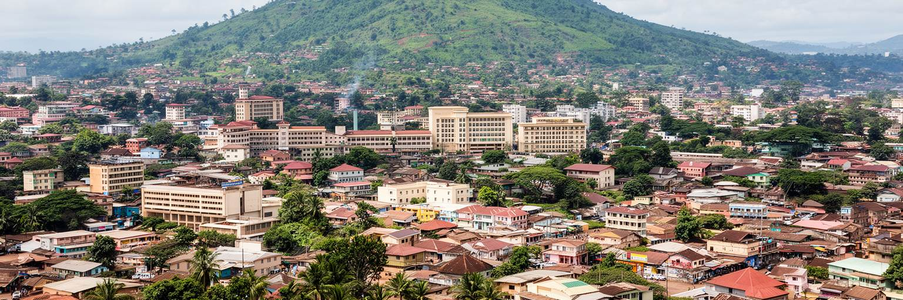
ヤウンデは、カメルーン経済の最大都市ドゥアラとは異なり、国家を運営するための政治首都として重みを持っています。大統領府、官庁、議会、裁判、外交団、国際機関、軍や警察の中枢、国営放送、主要大学が集まり、地方行政や開発計画の多くも首都の判断に結びつきます。カメルーンは英語圏とフランス語圏、海岸部と内陸部、北部と南部、複数の宗教と民族を抱える国であり、ヤウンデの行政は国内の調停装置でもあります。英語圏危機、中央アフリカ地域の安全保障、チャド湖周辺の不安、難民、選挙、分権化は、遠い問題ではなく首都の会議、予算、警備、報道として現れます。外交地区の整った街路と、市場やバイクタクシーの混雑は同じ都市にあります。国家権力は丘の上の施設に見えますが、住民にとっては身分証、学校、病院、税、警察、道路整備、停電対応として評価されます。ヤウンデの首都性を理解するには、式典の舞台だけでなく、制度が日々の窓口へ届くかを見なければなりません。各地から首都へ来る人は、書類、裁判、入学、医療、仕事の相談を抱え、役所の列や交通費の高さに直面します。行政の集中は効率を生む一方、地方の住民には遠い窓口にもなります。首都の制度が透明で予測できるほど、遠い州の人々も国家を信頼しやすくなります。その信頼は、窓口の説明、待ち時間、警備の態度にも表れます。
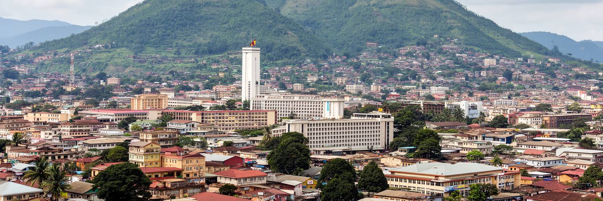
カメルーンを都市のネットワークとして見ると、ヤウンデとドゥアラの分業が重要になります。ドゥアラは港湾、金融、工業、輸入品、通関、企業活動の重心であり、ヤウンデは行政、外交、大学、政策決定、治安、国家儀礼の中心です。二つの都市を結ぶ道路と鉄道は、単なる国内移動路ではなく、政治と経済を結ぶ動脈です。港で扱われた燃料、機械、医薬品、消費財は内陸の首都へ向かい、首都で決まった規制、予算、許認可は港湾経済へ戻ります。渋滞、道路事故、鉄道の信頼性、燃料価格、検問、物流費は、店頭価格と行政運営に影響します。ヤウンデだけを見れば落ち着いた丘陵首都に見えますが、その生活は海へ開いたドゥアラの物流に深く依存しています。逆に、ドゥアラの企業活動は首都の制度と政治的安定を必要とします。この二都関係は、カメルーンの近代化が一つの都市に集中していないことを示します。首都の課題は、港湾都市を従えることではなく、交通、税関、産業政策、地方開発を通じて両都市の役割を滑らかにつなぐことです。幹線の遅れは、ヤウンデの市場価格、建設資材、病院の薬、官庁の調達にも及びます。都市間の接続が弱いほど、首都の政策は現場の経済から離れます。二つの都市を同じ国家システムとして見る視点が必要です。鉄道駅と長距離バスの混雑も、この依存関係を日々可視化します。
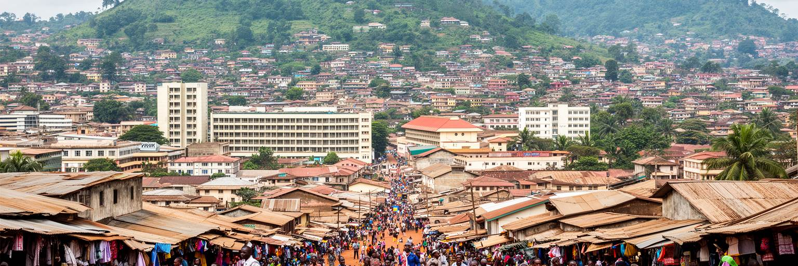
ヤウンデは大学、専門学校、行政研修機関、研究機関が集まる教育都市でもあります。地方から来た学生は、講義、試験、下宿、家族からの仕送り、アルバイト、宗教団体、同郷会、交通費に支えられながら首都で生活します。教育は社会的上昇の通路ですが、卒業後の雇用が十分でなければ、学歴は期待と失望の両方を生みます。公務員試験、教師、医療、法律、通信、国際機関、民間企業、起業は若者の進路になりますが、非公式労働や不安定な仕事へ向かう人も多いです。学生街にはコピー店、食堂、文具店、携帯修理、下宿、バイクタクシーが集まり、小さな都市経済を作ります。教室の混雑、学費、インターネット、図書館、停電、交通渋滞は学習の質を左右します。ヤウンデの若者文化は、音楽、サッカー、教会活動、SNS、語学、政治的議論の中で育ちます。首都が教育機会を集めることは強みですが、地方の学校との格差を広げる危険もあります。学生が都市に残れるか、地方へ技能を持ち帰れるかは、カメルーン全体の人材配置に関わります。若者が首都で学ぶほど、政治や社会問題への関心も高まり、カフェ、寮、教会、オンライン空間で議論が広がります。その声を雇用や地域開発へつなげられなければ、都市は教育された不満を抱えます。ヤウンデの未来は、学生を集める力だけでなく、学んだ人が尊厳ある仕事へ進める仕組みにかかっています。
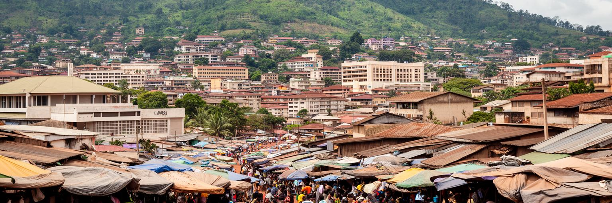
ヤウンデの経済は官庁の給与だけで動いているわけではありません。中央市場、地区市場、露店、バイクタクシー、ミニバス、建設現場、食堂、衣料、携帯修理、家事労働、警備、清掃、食品加工が、首都の毎日を支えています。公務員や外交関係者が使う整った場所の近くに、朝から荷を運び、野菜を並べ、揚げ物を売り、部品を直し、乗客を拾う人々の時間があります。非公式労働は不安定で、雨、取り締まり、道路渋滞、燃料価格、病気、治安、家賃の変化に弱いです。それでも、家計の多くは小さな商いと親族の支援を組み合わせて成り立ちます。市場は単なる買物の場ではなく、情報、信用、地域の評判、食文化、女性の経済力が集まる場所です。都市整備が露店を排除する方向だけに進むと、生活費を抑える仕組みと雇用の受け皿が壊れます。必要なのは、通路、衛生、排水、照明、保管、交通整理を整えながら、働く人が都市に残れる制度を作ることです。ヤウンデの首都経済は、見えにくい小さな仕事の持続に支えられています。市場で売られる食品は、近郊農村、北部や西部からの輸送、輸入品の流れに支えられ、価格は道路と燃料の事情を映します。小商人の利益は薄く、病気や雨で数日休むだけでも家計が崩れます。都市の公正さは、こうした仕事を違法な邪魔物として扱うか、生活を支える経済として扱うかに表れます。
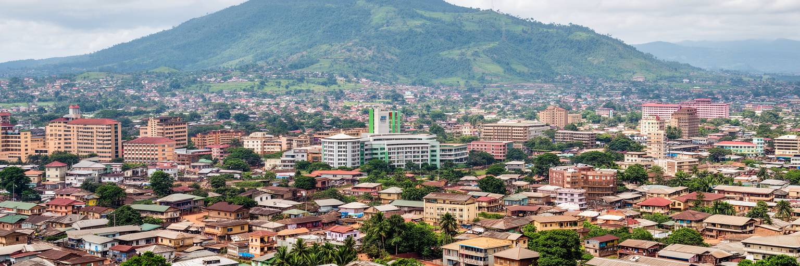
ヤウンデでは、キリスト教の教会、イスラム共同体、伝統的な儀礼、家族の行事、大学や職場の多言語生活が重なります。フランス語は行政と教育の中心ですが、英語、エウォンド語を含む地域言語、北部や西部から来た人々の言葉も市場や家庭で聞こえます。言語は単なる会話手段ではなく、出身地、教育、仕事、政治的立場、親族関係を示す手がかりになります。宗教施設は礼拝の場であると同時に、学校、医療相談、葬儀、結婚、失業時の支援、若者の集会を担います。首都に移住した人にとって、教会やモスクは新しい地区で信頼できる人を見つける場所にもなります。カメルーンの多様性は観光的な色彩だけでなく、行政手続き、学校教育、裁判、報道、就職の公平性に関わる現実です。ヤウンデの文化を読むには、博物館や記念碑だけでなく、日曜の礼拝後の食事、葬儀の支え合い、学生の同郷会、英語圏出身者の不安、複数言語の掲示を見る必要があります。多様な声を受け止める力が、首都の統合能力を決めます。礼拝や家族行事は、地方から来た若者や仕事を探す人に都市での足場を与えます。一方で、言語や出身地の違いが窓口や職場で不利に働けば、首都は統合の場ではなく格差を再生産する場になります。宗教と言語を尊重する制度が、都市の信頼を保ちます。祭礼や葬儀の共同作業は、異なる出身の住民を近づける実践にもなります。
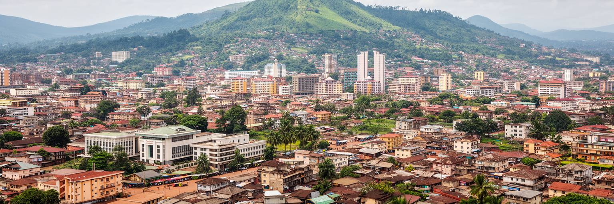
ヤウンデの暮らしでは、住宅、水、電気、排水、道路、交通が日々の時間を決めます。丘陵地に広がる住宅地では、中心部に近い場所ほど家賃が高く、遠い地区ほど通勤と通学の負担が増えます。給水が不安定な場所では、水をためる容器、井戸、近所の水場、販売水に頼り、停電は冷蔵、通信、学習、商売を止めます。雨季には谷筋の排水が追いつかず、未舗装路がぬかるみ、通学や市場への移動が遅れます。バイクタクシーや乗合交通は柔軟ですが、事故、混雑、料金交渉、燃料価格の影響を受けやすいです。住宅は家族の成長や収入に合わせて増改築され、親族や同郷者の助け合いが生活の安全網になります。首都であることは、全ての地区に十分なサービスが届くことを意味しません。住民が一日の予定を立てられるかは、水が出る時間、停電の長さ、道路の状態、バスに乗れるかにかかっています。都市政策の核心は、高層建築や官庁街だけでなく、生活道路、排水溝、街灯、学校、診療所、廃棄物収集を地区単位で整えることです。水汲みや停電への備えは、家事を担う人や学生の時間を奪い、収入の少ない世帯ほど余裕を失います。基本サービスが安定すれば、商店は在庫を保ち、子どもは夜に勉強し、診療所は薬を保管できます。生活インフラは目立たないが、都市の尊厳を支える最も実用的な政策です。
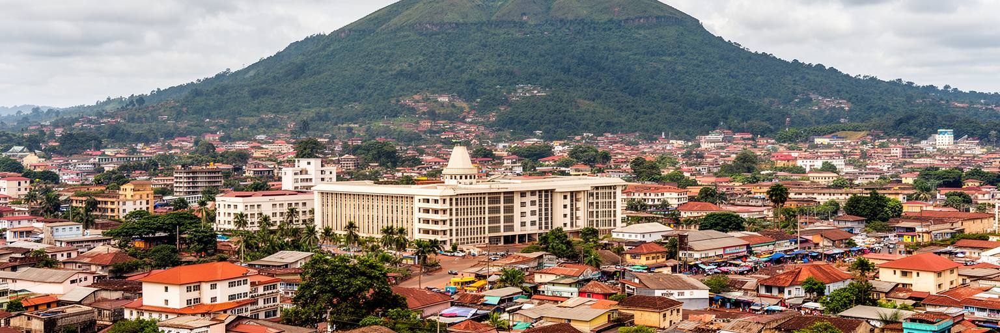
ヤウンデの観光は、統一記念碑、国立博物館、旧大統領府の記憶、中央市場、工芸品店、宗教施設、丘からの眺望、郊外の自然を結ぶ都市理解の旅になります。海辺やサファリのような強い一枚絵ではなく、政治首都の日常と国家の歴史をゆっくり読むタイプの観光です。博物館や記念碑には独立、統一、多民族国家の形成、植民地期からの制度の変化が重なります。市場では食材、布、工芸、言語、値段交渉、通勤の混雑が見え、丘の上からは緑に包まれた都市の広がりと交通の詰まりが同時に見えます。訪問者には、写真撮影、宗教施設、治安、移動手段への配慮が必要です。観光が住民の生活を邪魔せず地域収入につながるには、地元ガイド、博物館の解説、歩行環境、公共空間の管理、交通情報が大切です。ヤウンデの遺産は豪華な建築だけではありません。多言語の首都として人々が集まり、学び、働き、祈り、政治を語る日常そのものが都市の記憶です。観光は、その日常を軽く消費するのではなく、国家と生活の接点を学ぶ入口になります。短い滞在でも、記念碑、市場、丘の眺望、博物館を結んで歩くと、首都がどのように国民統合を語り、同時に生活の問題を抱えるかが見えてきます。観光の質は名所の数だけでなく、住民の尊厳を守りながら都市の物語を伝えられるかで決まります。地域の店や案内人へ支出が届く仕組みも重要です。
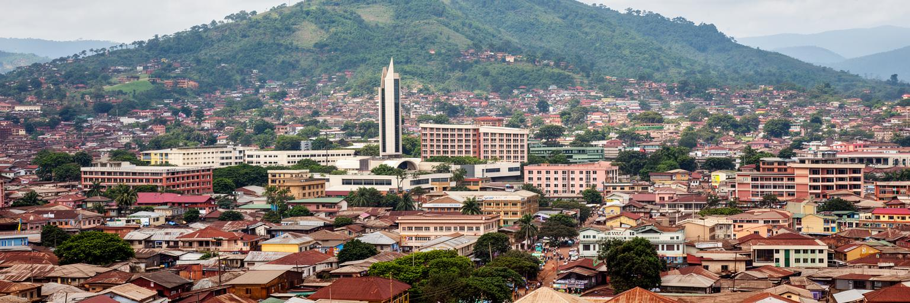
ヤウンデは人口増加と都市拡大の圧力を受けています。地方からの移住、学生、行政職、商業、建設、サービス業が人を集め、住宅地は中心部から周辺へ広がります。成長は機会を生みますが、土地権利の不明確さ、斜面開発、交通渋滞、廃棄物、排水、学校不足、若者の失業、非公式居住を同時に広げます。道路を広げるだけでは、歩行者、露店、バイクタクシー、通学、障害者、高齢者の移動は改善しません。首都の見栄えを整える政策が、低所得世帯や小商人を遠ざけるなら、都市は表面だけきれいになり、生活の不安は深まります。必要なのは、土地台帳、公共交通、排水、住宅、学校、保健、雇用支援を合わせて考える成長管理です。若者が学び、働き、住み続けられるかは、都市の安定に直結します。ヤウンデは国家の中心であるため、社会問題も象徴的に見えます。格差、言語、治安、失業、ジェンダー、公共サービスへの不満は、地方の問題を映す鏡でもあります。成長する首都を公平に管理できるかが、カメルーンの統治力を示す試金石になります。特に周辺部では、正式な区画整理より先に住宅が増え、学校や診療所や交通が後追いになります。今の不足を放置すれば、将来の改修費はさらに大きくなります。成長管理は都市の速度を止めることではなく、住民が危険な場所へ追い込まれず、働く場所へ届けるようにすることです。
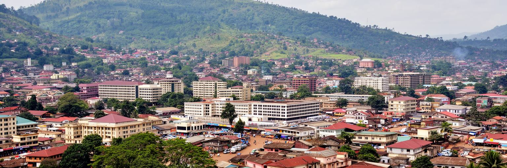
ヤウンデを読むことは、カメルーンという多様な国家がどのように自分を運営しようとしているかを読むことです。丘陵の上には大統領府、官庁、大使館、大学、ホテルがあり、谷筋には市場、住宅、バイクタクシー、排水路、学校、露店があります。首都の整った顔と、日々の生活を支える非公式な仕事は分かれているようで、実際には同じ道路と同じ水道、同じ渋滞に依存しています。ドゥアラとの分業、英語圏とフランス語圏の関係、地方から来る学生、宗教施設の支援、若者の雇用、丘陵地の住宅問題は、首都の日常へ集まります。ヤウンデの重要性は、経済規模だけでは測れません。政治判断、国際関係、教育、国民統合、都市拡大、生活インフラが近い距離にあるため、ここで起きる小さな不便や不信が国全体の制度への評価に響きます。丘から見える緑の首都は美しいですが、その下には排水、雇用、交通、言語、住宅の課題があります。都市を丁寧に見るなら、記念碑と市場、官庁と学生街、外交地区と谷の住宅を同じ地図に置く必要があります。ヤウンデは、国家の顔であり、生活の坂道でもある都市です。政治首都としての秩序と、坂の多い生活都市としての不便を同時に見ることで、カメルーンの強さと課題が立体的に見えます。制度が信頼されるかどうかは、住民が市場へ行き、学校へ通い、水を得て、仕事を探す毎日の経験によって試されています。